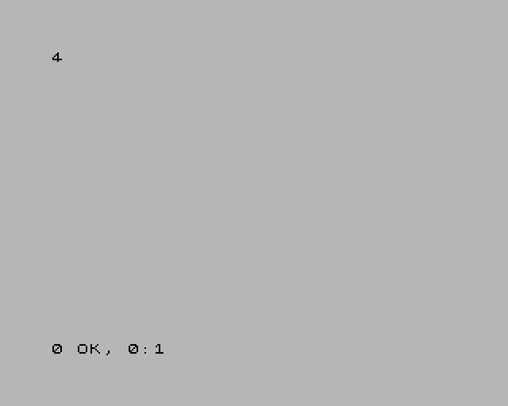

Keys, joysticks and host keys¶
A script can type into the guest and move its joysticks, and you can drive a script from the keyboard with the host keys.
Pressing keys¶
| Action | Does |
|---|---|
press "KEY" |
KEY goes down, and stays down until release |
release "KEY" |
KEY goes up (releasing a key that is up does nothing) |
press "KEY" for n |
a pulse: KEY down for n frames, then up |
All three land at the next frame edge: a key pressed during frame N is
seen by the guest from frame N+1, and by nothing in frame N. The guest
never sees the keyboard change in the middle of a frame, which is what keeps a
scripted run repeatable. It also means a press from an on write rule lands
at the same instant as one from an on frame rule.
A pulse is the same press --delayed-keypress-frames makes: press "KEY" for
5 in an on frame N rule is exactly --delayed-keypress-frames N KEY. The
guest sees it for n−1 frames, and a 4-frame gap with everything released
follows it, so pulses issued together queue up and type in order:
# type.jds — type PRINT 2+2 into 48K BASIC and keep the screen
on frame 150 do
press "p" for 5 ; P in K mode is the PRINT keyword
press "2" for 5
press "sym+k" for 5 ; SYMBOL SHIFT + K is +
press "2" for 5
press "enter" for 5
end
on frame 250 do
screenshot "print.png"
screenshot "print.scr"
end
on frame 252 do exit 0 end
$ jnext --headless --machine 48k --script type.jds
[debugger] [info] SCRIPT loaded type.jds: 3 rules
[debugger] [info] MUTATE key pulse [5,0] for 5 frames, queued by 2
[debugger] [info] MUTATE key pulse [3,1] for 5 frames, queued by 2
[debugger] [info] MUTATE key pulse [6,2]+[7,1] for 5 frames, queued by 2
[debugger] [info] MUTATE key pulse [3,1] for 5 frames, queued by 2
[debugger] [info] MUTATE key pulse [6,0] for 5 frames, queued by 2
[debugger] [info] SCREENSHOT "print.png" (layers: all) written
[debugger] [info] SCREENSHOT "print.scr" (.SCR) written
[debugger] [info] [jds F:252 C:141453368] SCRIPT EXIT 0
[platform] [info] script requested exit 0

Input from a script is a change to the machine, so each one is logged as a
MUTATE line, with the keyboard matrix positions ([row,column]) it pressed.
Key names¶
| Name | Key |
|---|---|
a … z, 0 … 9 |
that key |
enter (or return), space |
ENTER, SPACE |
. , ; : |
SYMBOL SHIFT + M, N, O, Z |
sym+X (or ss+X) |
SYMBOL SHIFT + key X |
caps+X (or cs+X) |
CAPS SHIFT + key X |
left down up right |
the cursor keys: CAPS SHIFT + 5, 6, 7, 8 |
"row,col" |
one bit of the keyboard matrix — "0,0" is CAPS SHIFT, "7,1" SYMBOL SHIFT |
ext:NAME |
one of the Next's extended keys (below) |
Names are case-insensitive; an unknown one is a run-time error.
The Next's extended keys are the 16 a Next keyboard has beyond the 40-key
matrix — the ones NextREGs 0xB0 and 0xB1 read, and the ones the PC's arrow
keys, Backspace and Esc drive: ext:right, ext:left, ext:down, ext:up,
ext:dot, ext:comma, ext:quote, ext:semicolon, ext:extend,
ext:capslock, ext:graph, ext:truevideo, ext:invvideo, ext:break,
ext:edit, ext:delete. They take press and release only: press
"ext:up" for 2 is a run-time error. Note that up and ext:up are different
keys: up presses CAPS SHIFT + 7 on the matrix, as a 48K program reads it.
Joysticks¶
joystick 1 0x10 ; port 1: fire
joystick 1 0 ; nothing pressed
joystick n bits sets connector n (1 or 2) to a 12-bit button state, at the
next frame edge. The bits are:
| Bit | 11 | 10 | 9 | 8 | 7 | 6 | 5 | 4 | 3 | 2 | 1 | 0 |
|---|---|---|---|---|---|---|---|---|---|---|---|---|
| Button | MODE | X | Z | Y | START | A | C (fire 2) | B (fire 1) | up | down | left | right |
The whole state is set at once: joystick 1 0x09 holds up and right together.
How the guest reads it depends on the joystick mode (NextREG 0x05): Kempston
sees bits 0 to 5, the 3-button Mega Drive modes bits 0 to 7, and bits 8 to 11
only through the MD 6-button latch (NextREG 0xB2).
on frame 50 do
press "ext:up"
joystick 1 0x10
end
on frame 51 do
log "NR 0xB0 (extended keys) reads ${nextreg[0xB0]:x2}"
release "ext:up"
joystick 1 0
end
on frame 52 do exit 0 end
[debugger] [info] MUTATE extended key 3 pressed at the next frame edge by 2
[debugger] [info] MUTATE joystick left = 0x010 by 2
[debugger] [info] [jds F:51 C:29497729] NR 0xB0 (extended keys) reads 08
[debugger] [info] MUTATE extended key 3 released at the next frame edge by 2
[debugger] [info] MUTATE joystick left = 0x000 by 2
(jnext --headless --machine next. Joystick port 1 is the "left" connector.)
Host keys: Alt+1 to Alt+8¶
The host keys let you drive a script while you use the program: arm a guard once the program has loaded, disarm it, take a capture.
- In the emulator window and the debugger window (Qt or SDL), Alt+1 to
Alt+8 raise host keys 1 to 8, and a script's
on hostkey Nrules run. They work with the debugger window open or closed. Holding a key down counts as one press. - Headless,
--script-key FRAME Nraises key N at the edge of frame FRAME, whereon frame FRAMEruns. Repeat the option for more keys.
Alt+1 to Alt+8 belong to the scripts: they never type their digit into the program, even with no script loaded, so what they do never depends on what is loaded. Alt+9 and Alt+0 still type 9 and 0, and Ctrl+Alt+N and Shift+Alt+N are not host keys. A debugger key binding cannot use Alt+1 to Alt+8.
While a session is being recorded, Alt+8 is also the recorder's capture key.
var presses = 0
disabled watch_frames: on write 0x5C78 do
log indent 4 "FRAMES written: ${VALUE}"
end
on hostkey 1 do
set presses = presses + 1
if presses == 1 then
enable watch_frames
log "key ${KEY}: watching FRAMES"
else
disable watch_frames
log "key ${KEY}: not watching any more"
end
end
on hostkey 2 do
stop "stopped from host key ${KEY}"
end
on stop do
log "the machine stopped: ${REASON} (PC ${PC:x4})"
end
$ jnext --headless --machine 48k --script keys.jds \
--script-key 100 1 --script-key 101 1 --script-key 102 2 \
--delayed-automatic-exit-frames 200
[debugger] [info] SCRIPT loaded keys.jds: 4 rules
[debugger] [info] [jds F:100 C:56469512] key 1: watching FRAMES
[debugger] [info] [jds F:101 C:56470520] FRAMES written: 19
[debugger] [info] [jds F:101 C:57028688] key 1: not watching any more
[debugger] [warning] SCRIPT STOP: stopped from host key 2 at PC=10AC FRAME=102 CYCLE=57587776
[debugger] [info] [jds F:102 C:57587776] the machine stopped: stopped from host key 2 (PC 10AC)
[platform] [info] script requested exit 3
In the GUI, the same script is Alt+1 to start watching, Alt+1 again to stop, Alt+2 to pause the machine.